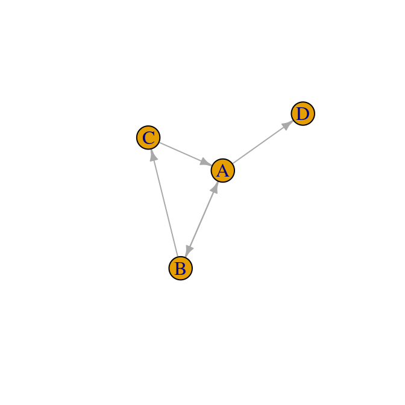
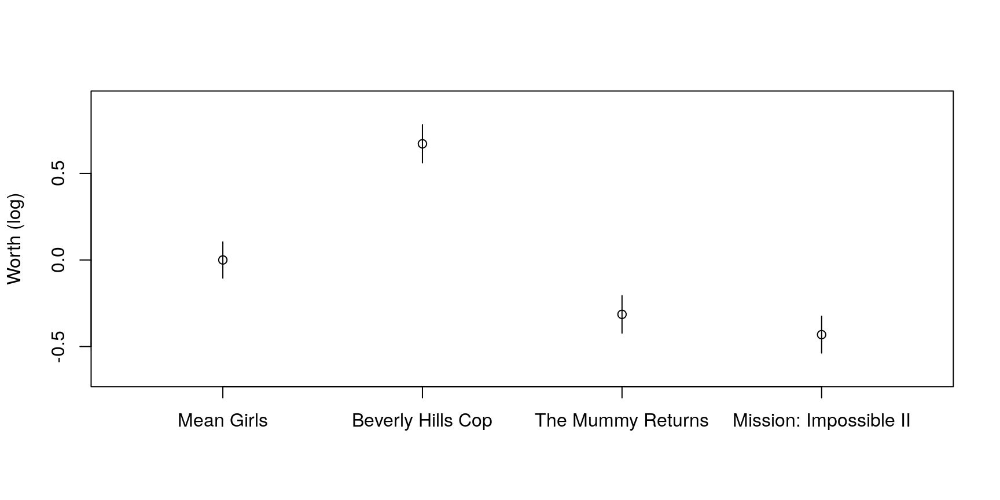

Package website: https://hturner.github.io/PlackettLuce/.
Overview
The PlackettLuce package implements a generalization of the model jointly attributed to Plackett (1975) and Luce (1959) for modelling rankings data. Examples of rankings data might be the finishing order of competitors in a race, or the preference of consumers over a set of competing products.
The output of the model is an estimated worth for each item that appears in the rankings. The parameters are generally presented on the log scale for inference.
The implementation of the Plackett-Luce model in PlackettLuce:
- Accommodates ties (of any order) in the rankings, e.g. bananas \(\succ\) {apples, oranges} \(\succ\) pears.
- Accommodates sub-rankings, e.g. pears \(\succ\) apples, when the full set of items is {apples, bananas, oranges, pears}.
- Handles disconnected or weakly connected networks implied by the rankings, e.g. where one item always loses as in figure below. This is achieved by adding pseudo-rankings with a hypothetical or ghost item.

In addition the package provides methods for
- Obtaining quasi-standard errors, that don’t depend on the constraints applied to the worth parameters for identifiability.
- Fitting Plackett-Luce trees, i.e. a tree that partitions the rankings by covariate values, such as consumer attributes or racing conditions, identifying subgroups with different sets of worth parameters for the items.
Installation
The package may be installed from CRAN via
The development version can be installed via
Usage
The Netflix Prize was a competition devised by Netflix to improve the accuracy of its recommendation system. To facilitate this they released ratings about movies from the users of the system that have been transformed to preference data and are available from PrefLib. Each data set comprises rankings of a set of 3 or 4 movies selected at random. Here we consider rankings for just one set of movies to illustrate the functionality of PlackettLuce.
The data can be read in using the read.soc function in PlackettLuce
library(PlackettLuce)
preflib <- "http://www.preflib.org/data/election/"
netflix <- read.soc(file.path(preflib, "netflix/ED-00004-00000138.soc"))
head(netflix, 2)## Freq Rank 1 Rank 2 Rank 3 Rank 4
## 1 68 2 1 4 3
## 2 53 1 2 4 3Each row corresponds to a unique ordering of the four movies in this data set. The number of Netflix users that assigned that ordering is given in the first column, followed by the four movies in preference order. So for example, 68 users ranked movie 2 first, followed by movie 1, then movie 4 and finally movie 3.
PlackettLuce, the model-fitting function in PlackettLuce requires that the data are provided in the form of rankings rather than orderings, i.e. the rankings are expressed by giving the rank for each item, rather than ordering the items. We can create a "rankings" object from a set of orderings as follows
R <- as.rankings(netflix[,-1], input = "orderings",
items = attr(netflix, "items"))
R[1:3, as.rankings = FALSE]## Mean Girls Beverly Hills Cop The Mummy Returns Mission: Impossible II
## 1 2 1 4 3
## 2 1 2 4 3
## 3 2 1 3 4Note that read.soc saved the names of the movies in the "items" attribute of netflix, so we have used these to label the items. Subsetting the rankings object R with as.rankings = FALSE, returns the underlying matrix of rankings corresponding to the subset. So for example, in the first ranking the second movie (Beverly Hills Cop) is ranked number 1, followed by the first movie (Mean Girls) with rank 2, followed by the fourth movie (Mission: Impossible II) and finally the third movie (The Mummy Returns), giving the same ordering as in the original data.
Various methods are provided for "rankings" objects, in particular if we subset the rankings without as.rankings = FALSE, the result is again a "rankings" object and the corresponding print method is used:
## 1
## "Beverly Hills Cop > Mean Girls > Mis ..."
## 2
## "Mean Girls > Beverly Hills Cop > Mis ..."
## 3
## "Beverly Hills Cop > Mean Girls > The ..."## 1
## "Beverly Hills Cop > Mean Girls > Mission: Impossible II ..."
## 2
## "Mean Girls > Beverly Hills Cop > Mission: Impossible II ..."
## 3
## "Beverly Hills Cop > Mean Girls > The Mummy Returns > Mis ..."The rankings can now be passed to PlackettLuce to fit the Plackett-Luce model. The counts of each ranking provided in the downloaded data are used as weights when fitting the model.
## Mean Girls Beverly Hills Cop The Mummy Returns
## 0.2306285 0.4510655 0.1684719
## Mission: Impossible II
## 0.1498342Calling coef with log = FALSE gives the worth parameters, constrained to sum to one. These parameters represent the probability that each movie is ranked first.
For inference these parameters are converted to the log scale, by default setting the first parameter to zero so that the standard errors are estimable:
## Call: PlackettLuce(rankings = R, weights = netflix$Freq)
##
## Coefficients:
## Estimate Std. Error z value Pr(>|z|)
## Mean Girls 0.00000 NA NA NA
## Beverly Hills Cop 0.67080 0.07472 8.978 < 2e-16 ***
## The Mummy Returns -0.31404 0.07593 -4.136 3.53e-05 ***
## Mission: Impossible II -0.43128 0.07489 -5.759 8.47e-09 ***
## ---
## Signif. codes: 0 '***' 0.001 '**' 0.01 '*' 0.05 '.' 0.1 ' ' 1
##
## Residual deviance: 3493.5 on 3525 degrees of freedom
## AIC: 3499.5
## Number of iterations: 7In this way, Mean Girls is treated as the reference movie, the positive parameter for Beverly Hills Cop shows this was more popular among the users, while the negative parameters for the other two movies show these were less popular.
Comparisons between different pairs of movies can be made visually by plotting the log-worth parameters with comparison intervals based on quasi standard errors.

If the intervals overlap there is no significant difference. So we can see that Beverly Hills Cop is significantly more popular than the other three movies, Mean Girls is significant more popular than The Mummy Returns or Mission: Impossible II, but there was no significant difference in users’ preference for these last two movies.
Going Further
The core functionality of PlackettLuce is illustrated in the package vignette, along with details of the model used in the package and a comparison to other packages. The vignette can be found on the package website or from within R once the package has been installed, e.g. via
vignette("Overview", package = "PlackettLuce")Code of Conduct
Please note that this project is released with a Contributor Code of Conduct. By participating in this project you agree to abide by its terms.
References
Luce, R. Duncan. 1959. Individual Choice Behavior: A Theoretical Analysis. New York: Wiley.
Plackett, Robert L. 1975. “The Analysis of Permutations.” Appl. Statist 24 (2): 193–202. https://doi.org/10.2307/2346567.